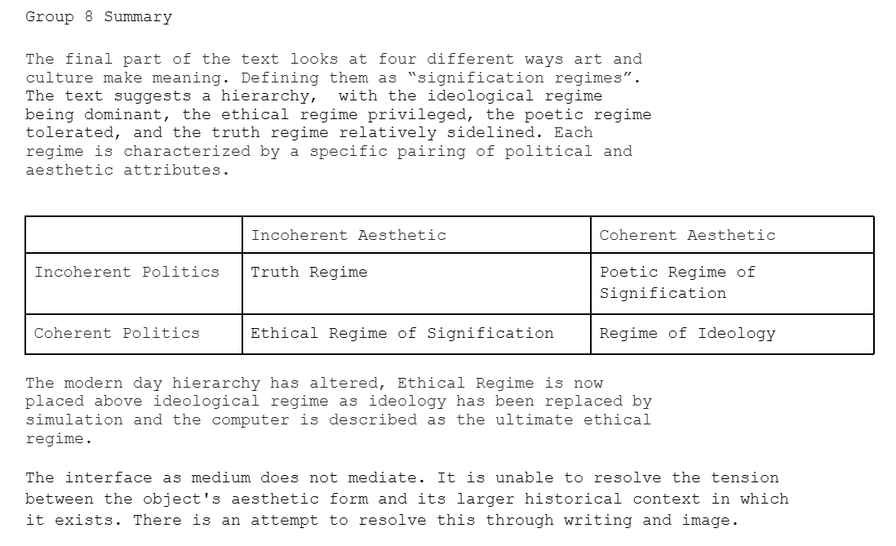

WEEK 1: INTRODUCTION
We were introduced to the session through the theme of transformations. In small groups we used chatGPT to regenerate some form of work. My group decided to take the lyrics of Christina Perri's Jar of Hearts and generate it into a new song. First we got it to create lyrics from the themes within the song, we then got it to create a chord progression from these lyrics. We then generated the lyrics into morse code. We then recorded both the noise from the morse code, the chord progression and the lyrics putting it into logic and making an audio track. With lots of editing we managed to make a track that was bearable to listen to. I enjoyed experimenting with ChatGPT and discovering what the AI software can do as I have never used it before.
WEEK 2: UNIT, WEB, HTML/CSS
Introdcution to HTML and CSS
We were introduced to the basics of HTML and CSS. This included us trying to code a basic online blog page which we will add to in further weeks.
Basics
- Browsers are HTTP (Hypertext Transfer protocol)
- DNS servers gives IP Address
- The Main element is always the html element. The Head holds the settings. The body is the structure of the webpage
- Heading H1-H6 (size of font) in a hierarchy
- Opening tag ie.
"- indicates opening of a paragraph
- ! means Auto FIll
- ID and CLass - ID is a unique identifier however they can have the same class. IDs are often used to reference a class name or in a style
WEEK 3: VERSION CONTROL, JAVASCRIPT, DEBUGGING
GitHub Introduction
We were introduced to using Github. It is an open source distributed control system. It tracks all the modifications made within code; saving stages of projects and also reverts to specific versions of code if needed. It is good for collaboration as it tracks code changes collectively and who made those changes. I found the software confusing, I can’t fully grasp how to upload code both privately and publicly. I need to spend more time understanding how it fully works.
Key Terms
Repository- A repository is like a project folder. Contain every single project file, documentation and history of each file. They can be public or private and have multiple collaborators.
Commit - Similar to saving an updated file to its original folder where the files gets overwritten by a new file, However each commit records the saved data step by step.
Clones - are copies of repositories.
Fork - A copy of an existing repository where the new owner creates their own separate version while retaining the codebase history and connection to the original repository.
Fetch - Fetching is the process of getting the latest changes from the online origin repository.
Push - the process of sending your committed changes to a remorse repository. If you make changes locally you'll be able to push them to the remote repository so others can have access.
Pull - a command like getting the latest version of a project from the internet and updating your own copy.
Core Programming Concepts
We looked at VARIABLES; The name of a storage location. Variables are used to store data and information in a computer program. We also looked at DATA TYPES; HTML for structure and content, CSS for presentation, JAVASCRIPT for styling.
String: sequence of characters, double quotes, single quotes and backticks and Boolean: two types of values/information that represent true or false values.
Javascript: Coding Alert Through Script Tag
We then learnt how to code an alert using the ‘onclick’ function through both an already existing internet browser using inspect as well as on our own HTML page. I found this quite simple.
WEEK 4: FRAMEWORKS and P5.JS
Javascript Behaviour
We looked at the use of commenting throughout Javascript Code. Not only does it provide commentary on the functional elements of the code (as reminders and for accessibility for others) it also can be used in a poetic way or as a signature of work. You can also comment code that you might not want to currently use in your code but want to save.
We also coded a button function that enabled us to change a title within our website. This can also be used as a behavior to change images etc as well.
Javascript
Inventory
Notable artists mentioned in this week's inventory Software as Material for Cultural Production include Valentina Vuksic and the works 5voltcore.
Introduction to P5JS
We were introduced to the basic functions of P5JS; it is a javascript library that runs through the function of setup() and draw(). As an introduction to the software I was eager to start to create some work and its ability to create interactive elements of a website.
Key Terms
Untyped - can store any kind of data
Typed - can only store specific value types
Constants - cannot be changed later
Imperative - run on command
Event-driven - run in response to events
WEEK 5: P5.JS CONTINUES AND ARRAYS
PayWalls
We briefly looked at the function of a paywall in websites and how this is coded through inspecting different websites. We looked at the overflow hidden systems used within the code to hide certain information, how these are coded and how to potentially get through them. This was just a brief introduction and something that I definitely will need to look back over in the future
P5.js (editing a previously made file)
We learnt how to create a drawing in P5JS. This began with us editing the code of previously made drawing. I found this a bit overwhelming as I was just trying to get a grasp of what the code did and didn't manage to produce an image I found interesting from the original. I added new shapes to the drawing and by deleting the background from the function draw() which enabled the sketch to have a blurred effect.
P5JS (learning how to use arrays)
We then learnt through the process of creating an array in P5JS in order to organize our code and speed up the process. We did this as a class through creating a sketch that allowed the user to click through a series of words using the mousePressed function. Through doing this I began to understand the basic elements of javascript needed in order to create a sketch.
P5JS (creating a sketch of my own for my Process Journal)
Introducing each letter by letter. This took a long process so I have created a list below:
- Through examples, I learnt how to loop a letter coming in from one side of the page to another
- This led me to a youtube video that explained how to display a letter in a set position. through using the mousePressed function however this was the same letter repeated
- I then created an array for my letters which then enabled me to code a way for the muse click to present a different letter in an order each time
- I removed the mousePressed function so the draw() function enabled the letters to automatically appear however they all appeared at once
- I then added a 2 second delay into my code through adding a ‘frame count’ variable and a ‘delay frames’ variable, by a statement that if the frame count is less then the delay frames, then to push the letter W. This enabled a delay between my first letter added but not the rest of the word
- I set a flag so the letter W wouldn't be repeated (nor word). ‘addedW’ shows that the W has been added
- I then added a ‘LettersToAdd’ array rather than ‘letters.push’ so all other letters are only shown once
- I added a ‘nextLetterTime’ variable to track when to add the next letter and a ‘delayBetweenLetters’ frames to make the statement that the nextLetterTime = the delayBetweenLetters and the FrameCount
- I added a ‘spacing’ variable to make sure the pixels in between the letters were the same
- I finally embedded the P5JS into my HTML file and created a div in order to have control over where it is placed in the layout of my webpage
The Unworkable Interface - Galloway
Interface as a method
The text explores the idea that there's a tension between the success of an interface and its invisibility, its success depends on how unnoticable it makes itself. There's an emergence of ‘ludic capitalism’ which withholds a return to romanticism and cybernetics. It combines poetry, design and labor in a form of play. Play is seen as a way to overcome systemic contradictions while tapping into the ineffable aspects of human nature. The text's presents this idea that the methodology used to analyze contemporary ludic interfaces methodological cocktail itself serves as an interface.
Interfaces ii
There are many definitions of interface from its association with screens to a gateway or passage to a place beyond or in computer science how one piece of code interacts with another. The concept of interface and medium collapse together as any format's identity is tied to its role as a container for another format. The concept of ‘threshold’ is emphasized suggesting that most media involve a transition moment in which the outside is evoked to make way for what happens inside. The interface is described as “being on the boundary”, it's not static it's always an effect, process or translation.
Intraface iii
The intraface is an internal interface that exists within the aesthetic realm of the image. It brings together the edge and the center creating a “Zone of indecision” where these elements co-exist. It's a way to transcend the limitations of previous interface theories and consider the dynamic interplay between the edge and the center in the aesthetic context. Moving away from the simple “window” interface it's more complex balancing elements of text, image and three-dimensional diegetic space. The intraface offers insight into contemporary life. The term "allegory" is introduced as a simpler way to describe this concept. This reinforces the interconnectedness of the three central themes: the structure of allegory, the intraface, and the dialectical relationship between culture and history.
Regimes of Signification iv
This section offers a framework for understanding the interplay between coherence and incoherence in both aesthetics and politics. The Coherent Aesthetic, Incoherent Aesthetic, Coherent PoliticsI and coherent Politics. It introduces regimes of signification, each characterized by a specific pairing of aesthetic and political attributes; Ethical Regime of Signification: In this regime, an aesthetic of incoherence aligns with a politics of coherence, Poetic Regime of Signification: Here, an aesthetic of coherence combines with a politics of incoherence and Regime of Ideology: In this regime, both the aesthetic and the politics align, displaying coherence in both areas. There is also Truth Regime: Both aesthetic and political aspects exhibit incoherence, associated with concepts of truth, nihilism, and radical alterity. This hierarchy can be historicized, revealing a shift in primacy from the ideological regime to the ethical regime in the contemporary age. Ideology has been replaced by simulation, and the computer is described as the ultimate ethical machine.
To conclude text the interface doesn't work and the difficulty lies in the fact that the interface does not admit its unworkability. There is always an intraface within the object, a tension between the aesthetic form of the work and the larger historical context in which it exists. The attempt to resolve this unworkability is what we call "writing," "image," or "object."
Preload 3D Model P5.js
Using what we had been producing in P5.js I wanted to load a 3D model I had produced in blender. I exported my 3D model as an OBJ file and after altering the position and figuring out how to rotate the model so it animates to a spin I managed to get this work. IO also learnt how to preload textures and alter the stroke weight of the mesh lines. I still need to figure out if I can use light elements within the sketch so it has lighting. I did however got told that three.js is a better library to use preloaded 3D models in Javascript, however at the moment I find this platform a bit intimidation and am struggling to figure out how to use it
WEEK 6: ARRAYS, CONDITIONALS AND LOOPS
P5JS mapping color of letters
I created a P5JS drawing that changes letters colors based on when the mouse is being positioned on the page. I did this through creating an array of letters and placed each letter at different sizes and positions on the page. I then created a console.log of the mouse and using the mapping tool scaled the mouse value to a range that goes through the color scale from 255 to 0. I feel pretty confident with arrays and found this part of the lecture quite easy.
P5JS Multiple lines
I created a shortened code that uses a loop to create multiple lines without having to individually code each one. This is a good way to simplify my code in the future and a quicker way of creating a sketch.
P5JS Ambient Noise Levels Visualiser
Step 1: Visuals
I created a code that randomly filled circles in an 8x8 grid using a looping system of randomly generated numbers. The conditional statement stated that if the number of the randomly generated number is less than 0.5, the fill function sets the circle color to a shade of red, otherwise it sets the circle to white.
Step 2: Microphone to Ambient Noise Levels
Using microphone audio input from my personal computer we created a sound level meter that displays city names based on audio input. The louder the audio input it matches the ambient noise levels from that city. mic.getLevel() retrieves the current audio level input. Const dBLevel = todB calculates the decibel level of the mic, adds 60 to account the mic level and adds an offset value from the dBa array. The loop goes through the dBa array and checks if each value is bigger than the dBLevel. If the dBa is bigger than the dBlevel the city name is assigned to the city variable and this is displayed on the screen. I found this really complicated and have to read back through. I am hoping this will make more sense when I complete the homework task.
Step 3: Combining the Elements
I then combined the two codes so it had a combined visual element to audio input. It creates a visualization of the audio input through randomly coloured circles. The cities change as the audio changes.
Assignment 1: Invisible Radio
Design and imagine innovative interactions for an invisible radio by breaking free from conventional radio design constraints and exploring creative ways to interact with radio communication.
Task: A concise 3 min video that provides context for your work and demonstrates it. It needs a Title and a Github link to the working P5JS Project.
CONTEXTUALISATION: Examine radios in different contexts. INNOVATION IN INTERACTIONS: Rethink traditional radio functions such as changing channels and adjusting volume. Consider gesture-based controls, voice commands, environmental factors, and AI integration. ENVIRONMENTS: Imagine how the invisible radio can seamlessly blend into urban or natural surroundings. USER FEEDBACK: As the radio is 'invisible', consider how the user will receive feedback
Examples: Hertzian Landscapes, Eternal Blue, Energy Lab, Looking for God (Fernando Orellana), Dustbowl (Durell Bishop), The bits and bobs (Noga Shimshon), Plugg (Skrekkogle), Studio OIO Lockdown radio
P5.js Letter Size based on audio input.
The homework was to create a code that used audio input to change the size of letters. The example given made each letter bigger based on the sound input. Taking the code created for the Ambient Noise Levels Visualiser earlier I coded a way for the letters to disappear based on the sound but not grow in size. Each letter is associated with a dBa rating the louder the audio input is, the letter disappears one by one; the end of the word is the hardest to disappear. I made this user friendly by making the letters get bigger one by one. I found this challenging to code.
WEEK 7: NESTED LOOPS, MULTI-DIMENSIONAL ARRAYS, OJECTS & JSON
Nested Loops
We can put loops inside other loops - called nesting. easily nest loops inside other loops, we are repeating repeated tasks. Multiple for loops help us organize our repetitions in the right way for the task
P5.js Drawing Using loops
I tried to produce a P5JS drawing that changes certain circles in the grid to different colors creating a face. I needed to figure out a statement that allowed them to stay rather than redrawing each time. I want to work on this after class so it actually works.
I managed to complete this by creating an array of boolean true and false statements. These are linked to the different circles on the grid. I then made a loop that makes the true statements of the happy face array black. I then nested another loop within that states if the mouse is clicked then the sad face array circles are turned black. I found this challenging. When I’m coding I just struggle to know the language of what I need to put in.
Multi-dimensional arrays
Just like with nesting loops we can produce multiple pieces of data in arrays. When we want to match the shape of our data to the shape of our array. It Creates lists of lists. Let flagColors = [[‘red’, ‘blue’, ‘white’],[‘yellow’, ‘red’], [‘green’, ‘red’, ‘yellow’]];
Objects and JSON
Sometimes it makes more sense for our data to be given a name than an index. Objects are kinds of data that have named fields inside (properties). Unlike an array we can use these names to access data instead of indices.
GUI Elements
Graphical user interface a form of a user interface that allows users to interact with electronic devices through icons or other graphical elements. You can create these using any elements in P5JS ie slider, button, text input etc. When making your own you need to monitor the position of the mouse, a reference code is on the slide attached below.
We then looked at some examples of using arrays in more complex code. I have attached these below.
The Unworkable Interface - Alexander R. Galloway
I saw an interface as a very 2 Dimensional aspect, just the connection between myself and a computer. This has altered my perception of it as almost a gateway or the edge of a boundary. It almost works as a liminal space that doesn’t understand itself. It has no context of itself or “consciousness” (in the way mankind depicts consciousness) which can cause a problematic stand or its workability. I find it interesting this obsession with the interface. The ‘interface’ has been an obsession of mankind for Millenia looking back at spiritual belief systems and the idea of your mind traveling to the space of the interface like in many Shamanic cultures. Through repetitive movements, chanting and the consumption of psychedelic drugs they traveled through an interface. I think this concept has had us captured for millenia. There is a rise of the interface in contemporary technology with the rise of technopaganism and not only our ethical regime tying to the computer but also it has become a religious belief system within itself .

WEEK 8: CSV AND API
CSV
CSV is a plain text format that represents tubular data as a sequence of text lines; data fields in CSV are separated by a specific character. The difference between JSON is there is no hierarchy in CSV flat of representing data.
We created a sketch that was based on CSV data and created different rows based on the data. I found this section easy to follow. It was a very simple example.
API and Serial Communication
Application programming interface - Is a set of rules and protocols that allows different software applications to communicate and interact with each other. I have attached a link below with API data examples.
We then created a sketch using API data. This showed us how to organize the API data and console certain elements displayed when we inspected the site. This was confusing but I hope it will get simpler when I further use this i.e. through assignment 2. We then got shown an example of a P5.js drawing made through the API data on tsunamis.
Assignment 1: Beautiful Data - A Plot Twist
Data visualization is an interdisciplinary field that involves the creation and study of visual representation of data.
Task: A concise 3 min video that provides context for your work and demonstrates it. It needs a Title and a Github link to the working P5JS Project.
Considerations
CONCEPTUAL EXPLORATION: Select a meaningful dataset and develop a concept that reveals patterns, stories or insights. INNOVATIVE REPRESENTATION: Think beyond the pen plotter, how can it be used in unconventional ways. Can it interact with water, light on digital screens, become part of a user interface in P5JS.
Examples: Automate Suminagashi, Digital Pheromes by Andres Acosta Blaschitz
WEEK 9: API'S, SERIAL COMMUNICATION AND PLOTTER
Sound Based on Pitch P5.js
I found a way to change the size of letters of a previous file I made using audio input and volume but through the pitch frequency. The higher the pitch the larger the font gets. I hope to use this code for the pen plotter and the arduino for my physical computing project. Example code
Altered CSV P5.js
Based on our previous lesson, I presented CSV data through different circles, changing the x,y, w values based on both the data and numerical values.
Pen Plotter Practice
We then looked at examples of how to use the pen plotter. We created code for this using the JSON data we got regarding Tsunami data. This led me to think about how I'll continue with my pen plotting assessment. I plan to use the data from multiple audio inputs rather than JSON data to make art through sound. Hopefully this will work successfully.
Assement 3
Fill out assesesmnet info
WEEK 10: APPLIED WORKS
Applied Works
We had a talk from Applied Works. The company make lots of data visualizations using data based on environmental issues. The work often focuses on interactive design elements that create user friendly and clear explanations on data analysis. They gave advice on producing a project and gave us a series of questions to consider when coming up with a concept.
Who does the project aim to communicate to ?
What is the visual goal of data?
How can we use different attributes to represent different aspects of data?
How can physicalists help to experience data in a more poetic and emotional way?
How does the data interact with the audience, does it interact with you?
We then got into groups and did a project on creating a physical visualization of a dataset. We are aiming to show participants deliberate use of time spent on certain social media apps compared to actual phone usage on different apparent applications. We did this by comparing the screen time they would deliberately be able to use compared to the extra time they spent and what they could have done in that time because we wanted to show what people believe how much time they are consenting to spending. We did this by displaying the distance the participants could have traveled through walking and different methods of transport over the period of time they are spending on their social media.
The talk from applied works made me think more about the possibilities of what I could potentially produce for my interface project for creative computing.